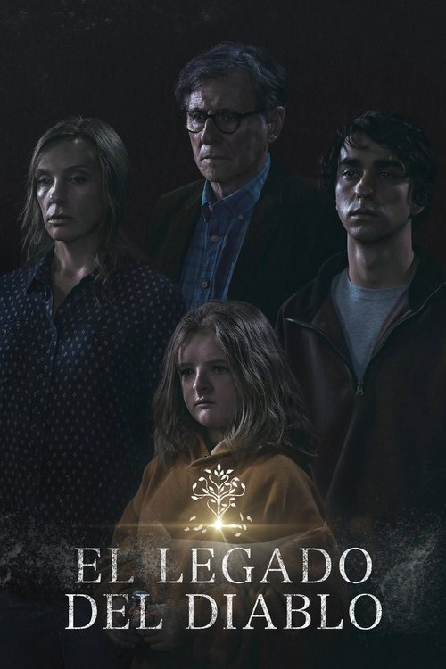

Hereditary (2018)

Plataforma: Netflix
Puntuación IMDb: 7.3/10
Duración: N/A
Género: {{ENLACE_CATEGORIA}}
Sinopsis Rápida
Sinopsis Detallada
Cosas extrañas comienzan a suceder en casa de los Graham tras la muerte de la abuela y matriarca, que deja en herencia su casa a su hija Annie. Annie Graham, una galerista casada y con dos hijos, no tuvo una infancia demasiado feliz junto a su madre, y cree que la muerte de ésta puede hacer que pase página. Pero todo se complica cuando su hija menor comienza a ver figuras fantasmales, que también empiezan a aparecer ante su hermano.